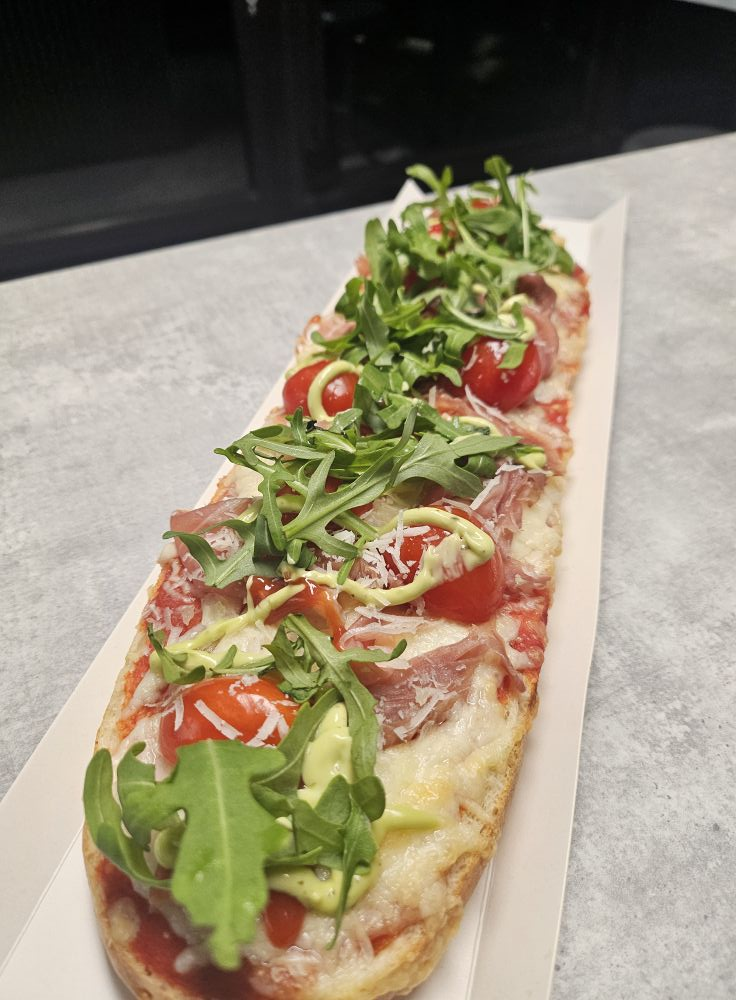

Beny Bagieta
Na 100% zaspokoisz głód naszymi świeżymi wypiekami. Pyszny farsz z pieczarek i najlepsze dodatki to nasz standarad. Możesz wybrać własne składniki. Rówież na wynos.

Na 100% zaspokoisz głód naszymi świeżymi wypiekami. Pyszny farsz z pieczarek i najlepsze dodatki to nasz standarad. Możesz wybrać własne składniki. Rówież na wynos.
Klasyk - Sos pomidorowy, pieczarki i ser. Po prostu smaki dzieciństwa, których nie zapomina się.
18 PLN
Farmerska - Sos pomidorowy, ser, salami, papryka i kukurydza. Jak u baci na wsi.
24 PLN
Wege - Sos pomidorowy, ser, oliwki, kukurydza, pomidorki. Bo gdzie zdrowe ciało - zdrowy duch.
22 PLN
Hiszpańska - Sos pomidorowy, ser chorizo, oliwki, papryka grillowana konserwowa. Coś dla fanów Iberii.
24 PLN
Rzeźnik - Sos pomidorowy, ser, szynka, salami, boczek. Coś dla każdego po ciężkim dniu pracy.
26 PLN
Włoska - Sos pomidorowy,ser, szynka parmeńska, ser grana padano, pomidorki, rukola. U nas jak w Italii.
28 PLN
Zrób to sam - sos pomidorowy plus cztery dowolne składniki. Coś dla kreatywnych.
28 PLN